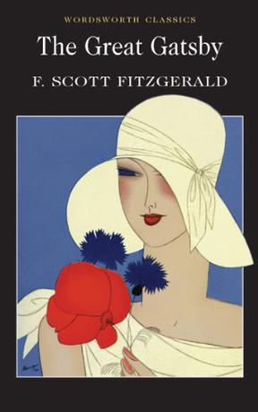
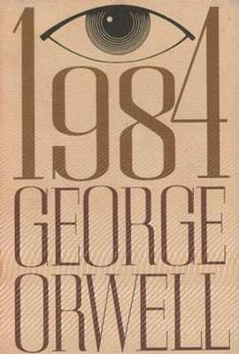

《The Great Gatsby》

Generally considered to be F. Scott Fitzgerald's finest novel, The Great Gatsby is a consummate summary of the 'roaring twenties' and a devastating expose of the 'Jazz Age'.
Through the narration of Nick Carraway, the reader is taken into the superficially glittering world of the mansions which lined the Long Island shore of the American seaboard in the 1920s, to encounter Nick's cousin Daisy, Jay Gatsby and the dark mystery which surrounds him.
The Great Gatsby is an undisputed classic of American literature from the period following the First World War and is one of the great novels of the twentieth century.
《1984》

“战争即和平；自由即奴役；无知即力量。”
“谁控制过去就控制未来，谁控制现在就控制过去。”
“老大哥在看着你！”
“所谓自由就是可以说二加二等于四的自由。”
“思想罪不会带来死亡；思想罪本身就是死亡。”
“在遮阴的栗树下，你出卖了我，我出卖了你。”